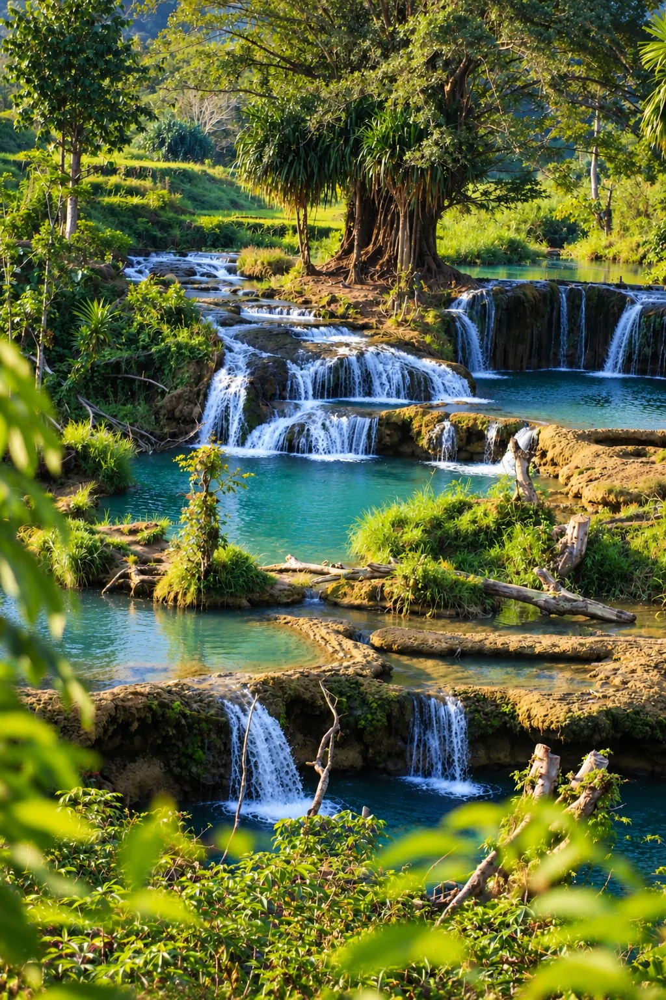

Il y a des endroits qu'on visite, et il y a l'Ouest de Sumba, qu'on traverse lentement, comme si la route elle-même faisait partie du voyage. Ici, les collines pelées de la saison sèche tombent d'un coup dans l'océan Indien, les villages perchent leurs toits de chaume en pointe sur des collines sacrées, et il n'est pas rare de croiser un cavalier au pas, sans selle, sur le bord d'une piste de terre rouge. C'est la zone la plus photographiée de l'île — et pourtant, une fois sur place, on comprend vite qu'aucune photo ne lui rend justice.
C'est aussi la zone la plus accessible : l'aéroport de Tambolaka est à moins d'une heure de la plupart des sites, ce qui en fait souvent la première étape d'un séjour à Sumba, avant de pousser vers le Centre ou l'Est. La ville elle-même sert surtout de porte d'entrée — on vous explique pourquoi.
Kampung Ratenggaro & le lagon de Weekuri
On approche Ratenggaro par une piste de sable, et puis d'un coup, les toits apparaissent : des cônes de chaume de huit à quinze mètres de haut, alignés face à l'océan, à l'embouchure d'une rivière que les habitants traversent encore à pied ou en petite pirogue. C'est considéré comme le plus ancien village de l'île. Ce ne sont pas des maisons reconstituées pour les visiteurs — des familles y vivent, y célèbrent leurs morts sous des tombes mégalithiques disposées entre les habitations, et perpétuent un ordre social où chaque maison a sa place et son rang. On visite en silence, on demande avant de photographier, et on comprend vite qu'on est ici les invités d'un monde qui n'a pas grand-chose à voir avec le nôtre.
À quelques minutes de route, le lagon de Weekuri change complètement de registre : une eau turquoise immobile, cerclée de roche volcanique noire, séparée de l'océan par une étroite bande de corail. Les vagues se brisent juste de l'autre côté du muret naturel — ici, c'est plat et tiède. On y flotte des heures, porté par une eau si salée qu'elle porte toute seule ; il vaut mieux tout de même rester dans les zones d'eau claire signalées, quelques poissons-pierre ayant été observés par endroits.

La route qui longe la côte entre ces deux sites est plate et bien entretenue — c'est justement le genre de trajet où un scooter loué sur place prend tout son sens : vous vous arrêtez où vous voulez, aussi longtemps que vous voulez, sans personne pour vous presser.

Service associé
Louer un scooter à Tambolaka
Dès 150.000 IDR/jour (≈ 8 $ / 7 €), casques inclus. Récupération à l'aéroport ou en ville.
Cascade de Weekacura
Moins connue que celles du Centre, la cascade de Weekacura se mérite : la piste qui y mène est accidentée sur la fin, et il n'existe pas encore de route officielle jusqu'au site — les coordonnées GPS mènent à un village voisin, d'où il faut encore marcher. Beaucoup de visiteurs indépendants se perdent ou renoncent avant d'arriver. Ceux qui persistent trouvent une chute encaissée dans une gorge de roche claire, avec un bassin assez profond pour y nager, et surtout, presque personne d'autre. C'est ce genre d'endroit qui rappelle que Sumba, contrairement à Bali ou Lombok, n'a pas encore été domestiquée pour le tourisme.

Service associé
Chauffeur privé — journée
Pour les pistes que le scooter n'aime pas. Un conducteur qui connaît le chemin.
Cascade de Lokomboro, l'endroit qu'on ne vous montre pas ailleurs
Il existe des lieux qu'on ne trouve dans aucun guide touristique classique, ni sur les cartes distribuées à l'aéroport. Lokomboro en fait partie : une cascade nichée plus au nord de la zone, que même certains habitants de Waikabubak ne connaissent pas. Il n'y a pas de parking, pas de panneau, pas de vendeur de noix de coco à l'entrée — juste le bruit de l'eau qui tombe, et la sensation d'avoir mis la main sur un secret. On ne la propose pas systématiquement dans nos circuits standards : elle se visite plutôt sur demande, avec un guide qui connaît vraiment le chemin.
Plage de Pantai Marosi
Une plage de rochers spectaculaire, sculptée par l'érosion en arches et en surplombs — mais à marée basse uniquement : à marée haute, elle disparaît presque entièrement sous l'eau. L'accès se fait à pied depuis le village voisin, en traversant les habitations locales ; il est d'usage, sans être obligatoire, d'acheter une noix de coco sur place en guise de remerciement pour le passage. Une fois sur le sable, la vue s'ouvre sur un petit village perché en hauteur, et il n'est pas rare de voir des buffles descendre se baigner dans la mer en fin de journée — un spectacle qu'on n'imagine pas avant de l'avoir vu de ses propres yeux. À quelques minutes, la petite anse de Watu Bella offre une eau plus calme, pour ceux qui préfèrent une baignade tranquille après les rochers de Marosi.
Villages de Praijing & Tarung
Perché sur une colline aux portes de Waikabubak, Praijing regroupe des dizaines de maisons traditionnelles aux toits pointus, certaines vieilles de plusieurs générations, reconstruites à l'identique après un incendie il y a quelques années. Le village de Tarung, tout proche, est l'un des centres spirituels de la religion Marapu — la croyance ancestrale sumbanaise, toujours vivante ici, bien avant l'arrivée de l'islam ou du christianisme sur l'île. On y sent une continuité rare : ce ne sont pas des vestiges, mais des lieux toujours habités, toujours utilisés, où les rituels se perpétuent loin des regards.
Que faire d'autre dans l'Ouest
Si vous préférez une formule organisée plutôt que l'indépendance à scooter, notre sortie à la journée "Westside" regroupe justement ces lieux emblématiques en une seule excursion, avec un chauffeur qui connaît chaque raccourci et chaque village où s'arrêter. Et si le temps ne manque pas, ne repartez pas sans une balade à cheval sur la plage au coucher du soleil — une façon différente de dire au revoir à l'Ouest, avant de continuer vers le Centre de l'île.
Les surfeurs pousseront volontiers jusqu'à Kerewei Beach, une vague encore confidentielle. Pour une plage vraiment déserte, Mananga Aba reste hors des radars touristiques. Et pour un aperçu d'un artisanat qu'on ne montre presque jamais, la production de sel traditionnelle de Katewel vaut le détour, en saison sèche. Si votre séjour tombe en février-mars, poussez jusqu'à Kodi, à l'extrême ouest de la même régence que Tambolaka, pour le Pasola — le combat rituel à cheval le plus authentique de l'île. Et pour une escale différente à quelques minutes de l'aéroport, le village portuaire de Waikelo vaut le détour, entre plage et communauté Bugis — à ne pas confondre avec Waikelo Sawah, sa cascade cachée au milieu des rizières, plus au sud. Toujours dans le secteur de Kodi, Mbawana Beach — sa grande arche de pierre — et le promontoire de Tanjung Mareha, juste au-dessus, offrent l'un des plus beaux panoramas côtiers de toute l'île. Sur la route de cette même zone, le village de pêcheurs de Pero offre une halte différente, avec ses barques colorées et sa communauté à majorité musulmane. Un peu plus au sud, le village de Manola — dont le nom signifie "un groupe qui se déplace" — raconte l'histoire de ses ancêtres migrants, restée peu connue même des habitués de l'île.
Enfin, dans le secteur de Watu Bella, ne manquez pas Waru Wora, un village construit directement en front de falaise — un cadre rare pour un village traditionnel. Et pour un coucher de soleil sans grand trajet depuis Tambolaka, Pantai Kita forme de jolis bassins naturels à marée basse. Près de Weekuri, ne passez pas à côté de Gua Welimbu, une grotte confidentielle à l'eau bleue transparente, repérable seulement par un discret panneau au bord de la route. Enfin, dans le secteur de Kodi, Kampung Buku Bani occupe une place à part : c'est ici que les prêtres traditionnels fixent chaque année la date du Pasola.
Enfin, ne vous étonnez pas si un simple arrêt sur la route se transforme en visite improvisée : dans des petits villages comme Waikaroko ou Yaru Wora, il n'est pas rare qu'une famille vous invite spontanément à entrer boire un thé — souvent les meilleurs souvenirs du séjour ne figurent sur aucune carte.